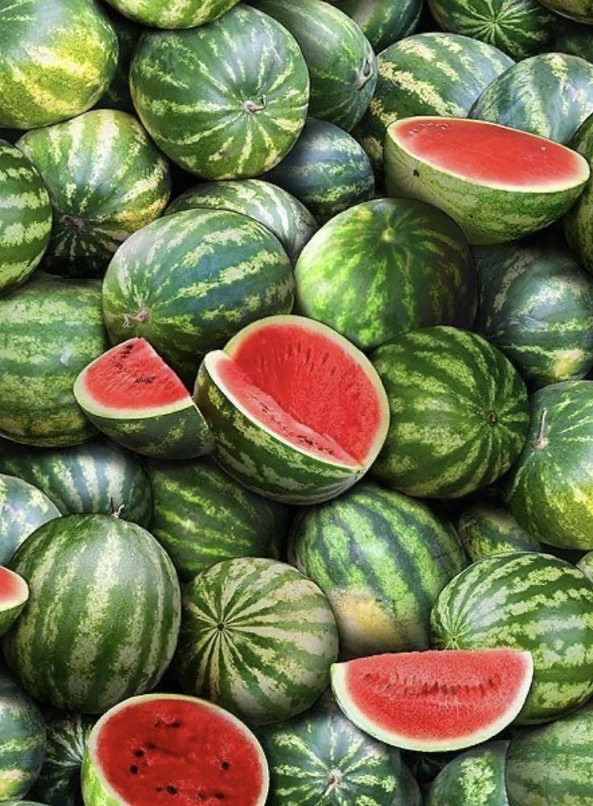

Watermelon Cultivation Guide

1. Climate & Soil
Requires hot, dry climate with temperatures between 25–35°C.
Well-drained sandy loam soil with pH 6.0–7.5 is ideal.
2. Land Preparation & Sowing
Plow and harrow the field 2–3 times to fine tilth.
Create raised beds or ridges for good drainage.
Sow seeds 1–1.5 inches deep at spacing of 2m x 0.6m.
Best sowing time: January to March (summer crop).
3. Irrigation
Water every 7–10 days after germination; reduce at maturity stage.
Drip irrigation improves efficiency and reduces disease risk.
Avoid water stagnation to prevent fruit rot.
4. Fertilizer Management
Apply FYM: 8–10 tons/acre during land prep.
Basal dose: 40 kg Urea, 50 kg SSP, 20 kg MOP per acre.
Top dressing with Urea 30–35 days after sowing.
5. Pest & Disease Management
Pests:
Red pumpkin beetle, aphids — controlled with neem oil or systemic insecticides.
Diseases:
Downy mildew, powdery mildew — managed by proper spacing and fungicides.
6. Investment Breakdown (Per Acre)
Input
Estimated Cost (INR)
Seeds
₹2,000 – ₹3,000
Fertilizers & Manure
₹4,000 – ₹6,000
Pesticides & Fungicides
₹2,000 – ₹3,000
Labor & Irrigation
₹6,000 – ₹8,000
Total Investment
₹14,000 – ₹20,000 per acre
7. Yield & Harvest
Harvest 70–90 days after sowing when the fruit base turns yellow.
Average yield: 8–12 tons per acre.
8. Market Rate & Profit
Average market price: ₹10 – ₹25 per kg.
Gross returns: ₹80,000 – ₹3,00,000 per acre.
Net profit: ₹60,000 – ₹2,80,000 per acre.